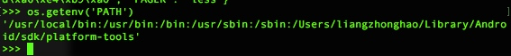

如果我们要操作文件、目录，可以在命令行下面输入操作系统提供的各种命令来完成。比如dir、cp等命令
Python内置的os模块也可以直接调用操作系统提供的接口函数。
打开Python交互式命令行，我们来看看如何使用os模块的基本功能：

注意uname()函数在Windows上不提供，也就是说，os模块的某些函数是跟操作系统相关的。
环境变量
在操作系统中定义的环境变量，全部保存在os.environ这个dict中，可以直接查看：

要获取某个环境变量的值，可以调用os.getenv()函数：

操作文件和目录
操作文件和目录的函数一部分放在os模块中，一部分放在os.path模块中，这一点要注意一下。查看、创建和删除目录可以这么调用：
# -*- coding: utf-8 -*-
import os
print os.path.abspath('.')
print os.path.join('/Users/liangzhonghao/Desktop/','test')
#os.mkdir('/Users/liangzhonghao/Desktop/python')
os.rmdir('/Users/liangzhonghao/Desktop/python')

os.path.splitext()可以直接让你得到文件扩展名，很多时候非常方便：
# -*- coding: utf-8 -*-
import os
print os.path.splitext('/Users/liangzhonghao/Desktop/text.txt')

这些合并、拆分路径的函数并不要求目录和文件要真实存在，它们只对字符串进行操作。
os模块有很多功能，例如重命名文件，删除文件。但是他没有复制文件的功能。因为复制文件并非是由操作系统提供的系统调用。
幸运的是shutil模块提供了copyfile()的函数，你还可以在shutil模块中找到很多实用函数，它们可以看做是os模块的补充。
最后看看如何利用Python的特性来过滤文件。比如我们要列出当前目录下的所有目录，只需要一行代码：
>>> [x for x in os.listdir('.') if os.path.isdir(x)]

要列出所有的.py文件，也只需一行代码：
# -*- coding: utf-8 -*-
import os
print [x for x in os.listdir('.') if os.path.isfile(x) and os.path.splitext(x)[1]=='.py']

小结
Python的os模块封装了操作系统的目录和文件操作，要注意这些函数有的在os模块中，有的在os.path模块中
练习：
编写一个search(s)的函数，能在当前目录以及当前目录的所有子目录下查找文件名包含指定字符串的文件，并打印出完整路径：
# -*- coding: utf-8 -*-
import os
def search(s ,dir=os.path.abspath('.')):
for x in os.listdir(dir):
path = os.path.join(dir,x)
if s in x:
print path
elif os.path.isdir(path):
search(s,path)
search('pr')